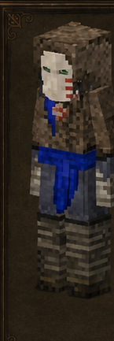

Maleante
Malefactor · código oficial
malefactor · ficha 10/16
Rasgos: 9
Bonus: 12
Malus: 5
Recetas: 12
Resumen humano
exploración, comercio y saqueo. Depende de ruinas/traders para expresar su ventaja.
Esta línea es interpretación funcional breve; lo importante son los números y recetas de abajo.
Bonus objetivos
- ahorro de durabilidad de herramientas de chatarra: **+100%** (valor interno `1`)
- ahorro de durabilidad de honda: **+100%** (valor interno `1`)
- alcance para recoger objetos: **+100%** (valor interno `1`)
- daño causado global: **+10%** (valor interno `0.1`)
- daño con herramientas de chatarra: **+50%** (valor interno `0.5`)
- daño con honda: **+50%** (valor interno `0.5`)
- daño contra humanoides: **+50%** (valor interno `0.5`)
- drop de engranajes oxidados: **+100%** (valor interno `1`)
- drop de nidos de langosta: **+100%** (valor interno `1`)
- puede abrir ventana extra de comercio: **activado (+1)** (valor interno `1`)
- rango de detección/agresión de animales: **-75%** (valor interno `-0.75`)
- velocidad agachado: **+50%** (valor interno `0.5`)
Malus objetivos
- daño recibido global: **+10%** (valor interno `0.1`)
- drop de frutales: **-75%** (valor interno `-0.75`)
- drop de semillas cultivadas: **-75%** (valor interno `-0.75`)
- drop de semillas/brotes de árbol: **-75%** (valor interno `-0.75`)
- saciedad de comidas preparadas: **-10%** (valor interno `-0.1`)
Rasgos oficiales y efectos reales
| Rasgo | Tipo | Datos objetivos |
|---|---|---|
Pícarorogue | positivo | rango de detección/agresión de animales: -75% (interno -0.75)daño recibido global: +10% (interno 0.1)daño causado global: +10% (interno 0.1) |
Maleantemalefactor | positivo | sin atributos numéricos en traits.json; desbloqueo/rasgo de receta |
Improvisadorimproviser | desbloqueo/vanilla | sin atributos numéricos en traits.json; desbloqueo/rasgo de receta |
Contrabandistasmuggler | positivo | puede abrir ventana extra de comercio: activado (+1) (interno 1) |
Acechadorsneak | positivo | daño contra humanoides: +50% (interno 0.5)velocidad agachado: +50% (interno 0.5) |
Ladrónthief | positivo | alcance para recoger objetos: +100% (interno 1)drop de engranajes oxidados: +100% (interno 1) |
Desguazadorscrapper | positivo | drop de nidos de langosta: +100% (interno 1)daño con honda: +50% (interno 0.5)daño con herramientas de chatarra: +50% (interno 0.5)ahorro de durabilidad de herramientas de chatarra: +100% (interno 1)ahorro de durabilidad de honda: +100% (interno 1) |
Recolector pobrescourer | negativo | drop de semillas cultivadas: -75% (interno -0.75)drop de semillas/brotes de árbol: -75% (interno -0.75)drop de frutales: -75% (interno -0.75) |
Insípidoflavorless | negativo | saciedad de comidas preparadas: -10% (interno -0.1) |
Recetas / desbloqueos
12mesa normal
0estación
0compatibilidad
12salidas listadas
Categorías detectadas
Recuperación de chatarra y piezas: 11Comercio: 1
Ver salidas exactas de recetas de esta clase (12)
| Modo | Categoría legible | Resultado legible | Nombre ES |
|---|---|---|---|
| mesa de crafteo normal | Recuperación de chatarra y piezas | Scrapweaponkit ×1 | — |
| mesa de crafteo normal | Recuperación de chatarra y piezas | Torchholder ruined empty norte ×1 | — |
| mesa de crafteo normal | Recuperación de chatarra y piezas | Torchholder envejecido empty norte ×1 | — |
| mesa de crafteo normal | Recuperación de chatarra y piezas | Torchholder envejecido empty norte ×1 | — |
| mesa de crafteo normal | Recuperación de chatarra y piezas | Torchholder envejecido empty norte ×1 | — |
| mesa de crafteo normal | Recuperación de chatarra y piezas | Metal scraps ×1 | — |
| mesa de crafteo normal | Recuperación de chatarra y piezas | Axe scrap scrap ×1 | — |
| mesa de crafteo normal | Recuperación de chatarra y piezas | Club scrap scrap ×1 | — |
| mesa de crafteo normal | Recuperación de chatarra y piezas | Club scrapmace scrap ×1 | — |
| mesa de crafteo normal | Recuperación de chatarra y piezas | Hoja scrap scrap ×1 | — |
| mesa de crafteo normal | Recuperación de chatarra y piezas | Lanza scrap scrap ×1 | — |
| mesa de crafteo normal | Comercio | Gear rusty ×8 | — |
Archivos de esta ficha
Markdown corregido · PNG corregido · Fuente objetiva original si existe
{kind=link}